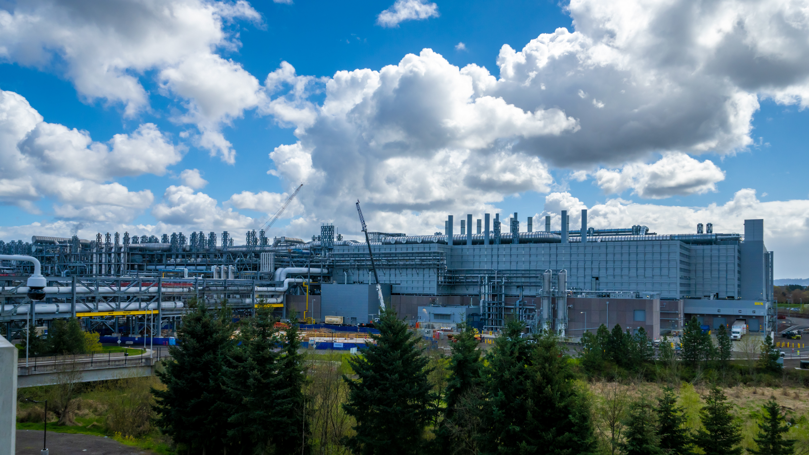
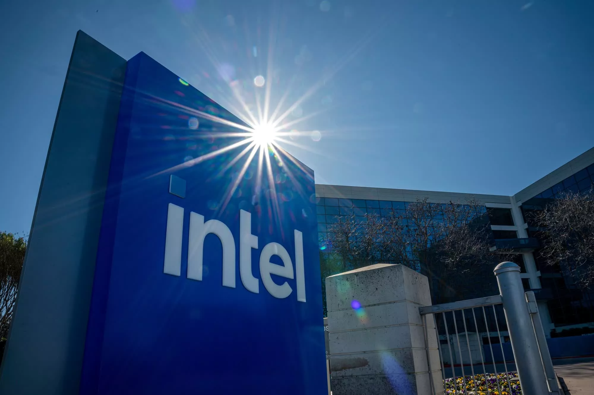
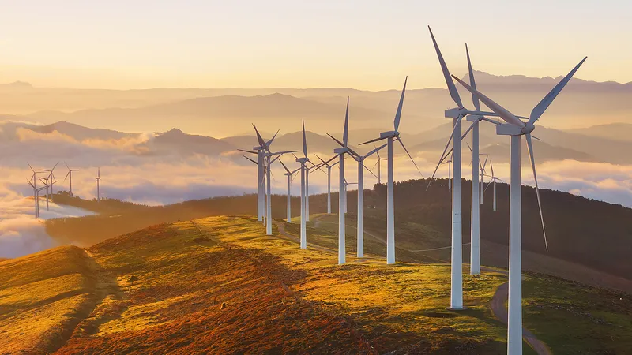

Sustainability Through the Ages
Explore Intel's journey through time, discovering how our commitment to innovation has shaped a more sustainable future for technology and our planet.
Explore Intel's journey through time, discovering how our commitment to innovation has shaped a more sustainable future for technology and our planet.

Robert Noyce and Gordon Moore rename the newly formed company NM Electronics to Intel Corporation, laying the foundation for decades of technological innovation.
The name "Intel" is a portmanteau of "Integrated" and "Electronics." The company was almost called "Moore Noyce" but it sounded too much like "more noise."

Intel debuts the 4004, the world's first commercial microprocessor, igniting the microprocessor revolution and propelling the future of computing devices.
The Intel 4004 was originally designed for a Japanese calculator company, Busicom. Its success led Intel to pivot from memory to microprocessors.

Launch of the 8086 processor, establishing the x86 architecture that drives countless PCs and servers in the modern era.
The x86 architecture got its name from the Intel 8086 and 80286 processors. This architecture is still the basis for most desktop and laptop computers today.

Intel introduces the 386 processor with 32-bit architecture, ushering in a new era of performance and multitasking for personal computers.
The Intel 386 was the first mainstream processor to offer a 32-bit instruction set, allowing for larger memory addressing and more powerful software.

This year marks Intel's highest annual greenhouse gas emissions for operations. Over subsequent years, Intel invests heavily in chemical abatement, renewable energy, and energy-efficient manufacturing to reverse this trend.
Intel has since reduced its absolute Scope 1 and 2 emissions by 52% compared to 2006 levels, despite significant business growth.

Intel launches its RISE (Responsible, Inclusive, Sustainable, Enabling) strategy and 2030 goals, aiming to drive industry-wide progress on climate action, water stewardship, and waste reduction.
The RISE strategy's 2030 goals include achieving 100% renewable energy use and a net-positive water footprint.

Intel announces its commitment to achieve net-zero greenhouse gas emissions (Scope 1 and 2) across its global operations by 2040, building on years of environmental initiatives.
This commitment is based on science-based targets and includes reducing emissions from the company's value chain, known as Scope 3 emissions.

The company achieves 99% renewable electricity usage worldwide, helping to drastically lower carbon emissions and driving progress toward Intel's long-term sustainability goals.
Intel's progress was achieved through a combination of on-site solar and wind power, as well as the purchase of renewable electricity certificates.

Intel hosts its first Sustainability Summit, uniting suppliers, government officials, and industry leaders to collaborate on next-generation sustainable semiconductor manufacturing.
The summit's focus areas included energy efficiency, waste management, and the responsible sourcing of materials used in semiconductor production.
Scroll to view timeline | Hover over cards to learn more!